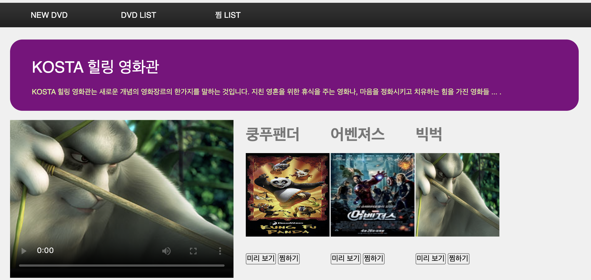
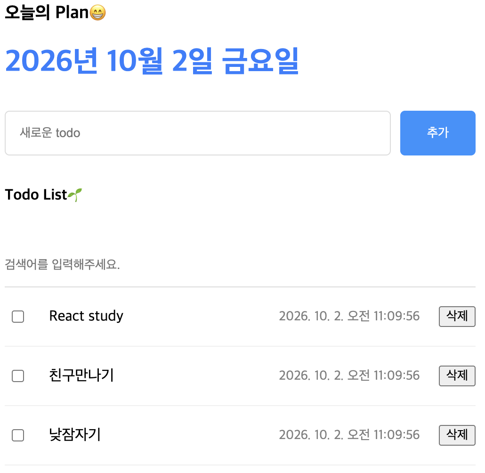
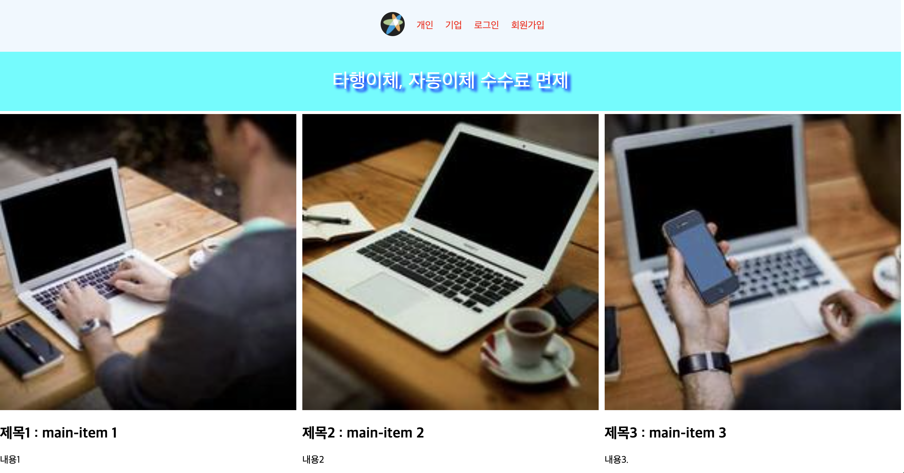

Python
Java
JS
SQL
Programming Languages
Python, Java, JavaScript, SQL을 활용하여 데이터 분석부터 애플리케이션 개발까지 다양한 문제를 해결합니다.
컨설팅에서 쌓은 문제 정의 경험과 데이터·AI·개발 역량을 연결해
더 나은 해결책을 만들어갑니다.
지자체 정보화 전략·기본계획 컨설턴트로서 이해관계자 인터뷰와
데이터·문헌조사를 통해 현장의 문제를 정의하고, 요구사항을 분석해
실행 가능한 전략과 정보화 과제를 도출한 경험이 있습니다.
이러한 문제해결 경험을 바탕으로 AI·빅데이터 전공
대학원과 개발·데이터 교육을 통해 Python, Java, SQL, 데이터베이스,
데이터 분석 및 AI 관련 역량을 쌓으며 다양한 프로젝트를 수행했습니다.
비즈니스 문제를 구조화하고 기술과 데이터로 해결책을
구현하는 강점을 바탕으로, AI·데이터·백엔드·데이터베이스 영역을
폭넓게 이해하는 IT 엔지니어로 성장하고 있습니다.
기획
과정에서 발견한 문제를 분석과 구현으로 끝까지 연결해, 현장에서
실제로 쓰이는 결과를 만드는 것을 중요하게 생각합니다.
Python, Java, JavaScript, SQL을 활용하여 데이터 분석부터 애플리케이션 개발까지 다양한 문제를 해결합니다.
데이터 전처리와 탐색적 데이터 분석을 통해 데이터에서 의미 있는 패턴과 인사이트를 발견하고 분석 결과를 시각화합니다.
머신러닝 모델과 생성형 AI, AIagent를 활용해 데이터 예측, 이미지 분석, 영상 분석 등 AI 기반 프로젝트를 구현합니다.
Java 기반 애플리케이션에서 객체지향 설계와 DAO 구조를 활용하여 비즈니스 로직과 데이터 처리 기능을 구현합니다.
관계형 데이터베이스 설계와 SQL을 활용하여 데이터를 저장·조회·관리하고 애플리케이션과 데이터베이스를 연동합니다.
HTML, CSS, JavaScript를 활용한 웹 페이지와 Streamlit 기반 데이터 분석 웹 애플리케이션을 구현합니다.
분석 결과를 차트와 지도 기반 시각화로 표현하고, 사용자가 데이터를 직관적으로 탐색할 수 있는 인터랙티브 대시보드를 구현합니다.
Git과 GitHub를 활용하여 프로젝트 버전 관리와 협업을 수행하고 Linux, WSL, Docker 환경을 활용하여 개발 환경을 구성해 애플리케이션을 실행합니다.
이해관계자 인터뷰와 데이터·문헌조사를 통해 비즈니스 문제와 요구사항을 분석하고 실행 가능한 IT 전략과 과제를 도출합니다.
selected projects

영화 미리보기와 찜 목록 관리 기능을 제공하는 영화 큐레이션 페이지를 HTML, CSS, JavaScript를 활용하여 작성
할 일을 등록하고 완료 여부를 체크하거나 검색·삭제하며 하루 일정을 관리하는 웹앱을 HTML, CSS, JavaScript를 활용하여 작성
개인·기업 메뉴와 로그인·회원가입 화면, 자동으로 바뀌는 배너를 구성한 KOSTAd은행 포털 사이트를 HTML, CSS, JavaScript를 활용하여 작성Thank you for comming